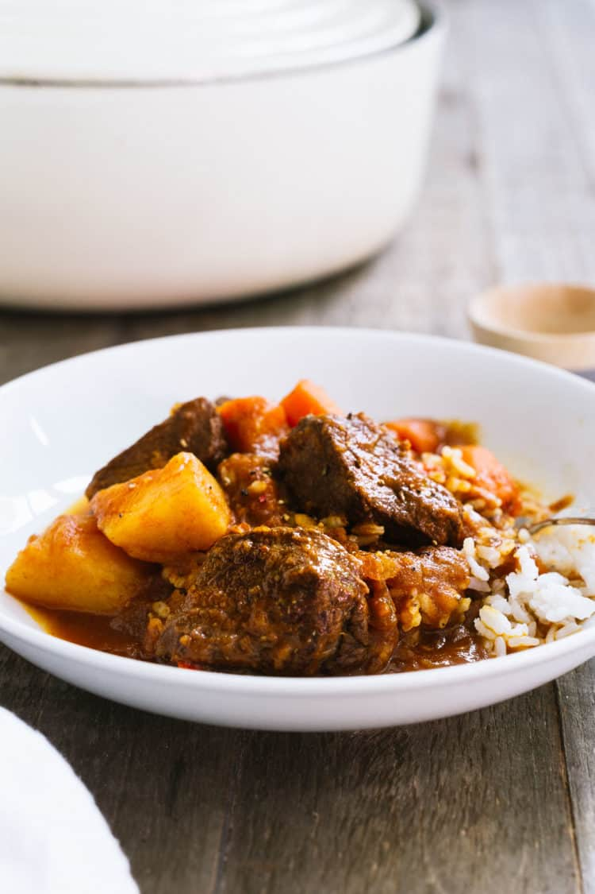

Beef Mechado

Description
Mechado is the Philippine version of the ubiquitous comfort food with a wonderful depth of flavor that comes from browned garlic, marinated beef, and the complex flavors of patis, or fish sauce.
Ingredients
- 1 1/2 lbs beef for stew
- juice of half a lemon
- 1/4 cup good dark soy sauce
- 3 tablespoons canola oil
- 3 cloves garlic minced or crushed
- 1 medium onion diced
- 1 teaspoon fish sauce (patis)
- 1 cup tomato sauce
- 1 1/2 cups water
- several dashes of Tabasco
- 2-3 cups beef stock
- 2 bay leaves
- 1 red bell pepper sliced
- 2 russet potatoes peeled and cut into 2 inch chunks
- 2 carrots peeled and chopped in 2 inch pieces
- kosher salt
- freshly ground black pepper
Steps
- Marinate beef in soy sauce, lemon, and black pepper for at least 30 minutes.
- Brown garlic in oil and set aside.
- Brown beef, working in batches if necessary (reserve the marinade).
- Return beef to pot, add onions and season with fish sauce (patis).
- When the onions are wilted, add tomato sauce and water and stir.
- After about two minutes, add Tabasco, beef stock, 2 tablespoons of reserved marinade, bay leaves and bell pepper.
- Let come to a boil, then lower heat to simmer. Add reserved garlic. Cover the pot with the lid, and let it stew for about 1 1/2 hours (see notes), stirring occasionally.
- When the meat is tender, add potatoes and carrots. Continue cooking until the potatoes are fork tender, about 20 minutes more.
- Season with salt and pepper to taste. Serve over rice.